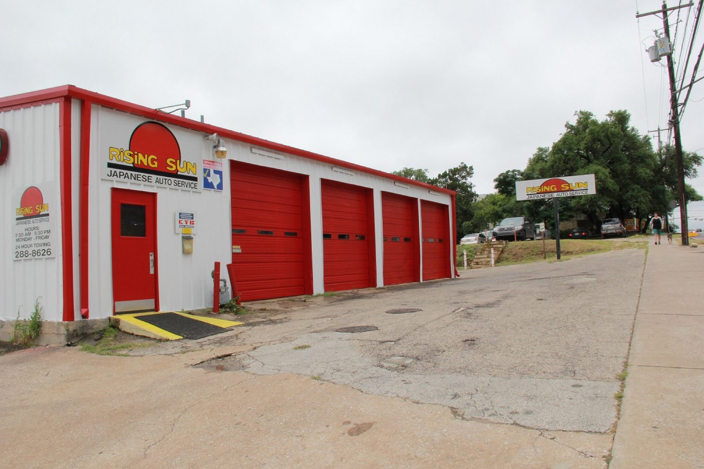

Multi-point inspection
Austin, TX
- Checked
- Watch
- Fix now
Auto repair · S Lamar Blvd, Austin
Straight answers for Asian cars.
Maintenance, repairs and parts for Asian cars, with costs spelled out before work starts.

- Shop
- Rising Sun Automotive
- Rating
- 4.7/ 5
- Signed off by
- 447Google reviews
- Call
- (737) 315-3399
- Asian car repair
- Maintenance
- Oil changes
- Parts
- Detailed estimates
Systems we check
What we check and fix
Maintenance, repairs and parts for Asian cars, from oil changes to the bigger jobs.
- Checked
- Watch
- Fix now
-

Asian car maintenance
Complete maintenance for Asian cars of all makes and models, kept on schedule.
- Oil changes
- Fluids
- Routine service
-

Asian car repairs
Repairs explained before the work starts, so you know what needs doing now and what can wait.
- Diagnosis
- Repair
- Phone call before the work
-

Parts and estimates
Auto parts for the job, with a detailed breakdown of costs in the estimate.
- Auto parts
- Detailed cost estimates
- Clear turnaround
What we found, what we fixed
See the part, then the repair
Found Fix now
Fixed Checked
The record
- 4.7Google rating
- 447Google reviews
Signed off
What drivers say
4.7 / 5 from 447 Google reviews
Note
I’m very happy I chose Rising Sun to service my truck. They are honest, responsive, and transparent. My Toyota feels and drives like brand new again. Their estimating process is clear, with a detailed breakdown of costs, and the turnaround time was impressively fast. You can tell they genuinely care about their customers and value long-term relationships. I highly recommend them and will definitely be back.
Note
It’s hard finding a new car shop, let alone one you can trust. I’ve only been in Austin for a year now. Highly recommend this shop! I was suggested here by a friend. I got an oil change and thought I needed my breaks done. I got a phone call explaining how I didn’t need my breaks done.
Note
I had such a great experience bringing my vehicle in this morning! I had been experiencing an issue that was concerning me, and the technician was incredibly understanding of how urgent it felt. He was able to get me in and out quickly, which I really appreciated.

The shop
A shop for Asian cars
Red-doored bays under the rising sun sign. Complete maintenance, repairs and parts for Asian cars of all makes and models.
We listen, get you in and out quickly, and tell you plainly what your car needs and what can wait.
- Honest callsIf the brakes don't need work, we say so.
- Clear estimatesDetailed cost breakdowns and fast turnaround.
- Heard and helpedUrgent problems get seen quickly.
Photos
Around the shop


Find us
Find us on South Lamar
1001 S Lamar Blvd, Austin, TX 78704
Park in the shop's lot. The sign is clear: all others will be towed.
Hours
- Mon
- 7:30 AM–5:30 PM
- Tue
- 7:30 AM–5:30 PM
- Wed
- 7:30 AM–5:30 PM
- Thu
- 7:30 AM–5:30 PM
- Fri
- 7:30 AM–5:30 PM
- Sat
- Closed
- Sun
- Closed